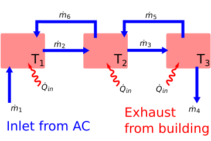
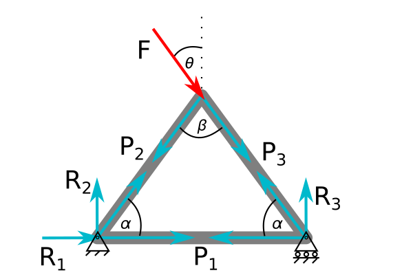

Homework
Contents
Homework¶
Problems Part 1¶
Consider 4 masses connected in series to 4 springs with K=1,000 N/m. What are the final positions of the masses i.e. when acceleration is 0?

The masses haves the following amounts, \(m_1=1,~m_2=2,~m_3=3,~and~m_4=4 kg.\) Using a FBD for each mass:
\(m_{1}g+k(x_{2}-x_{1})-kx_{1}=0\)
\(m_{2}g+k(x_{3}-x_{2})-k(x_{2}-x_{1})=0\)
\(m_{3}g+k(x_{4}-x_{3})-k(x_{3}-x_{2})=0\)
\(m_{4}g-k(x_{4}-x_{3})=0\)
in matrix form:
\(\left[ \begin{array}{cccc} 2k & -k & 0 & 0 \\ -k & 2k & -k & 0 \\ 0 & -k & 2k & -k \\ 0 & 0 & -k & k \end{array} \right] \left[ \begin{array}{c} x_{1} \\ x_{2} \\ x_{3} \\ x_{4} \end{array} \right]= \left[ \begin{array}{c} m_{1}g \\ m_{2}g \\ m_{3}g \\ m_{4}g \end{array} \right]\)

In the figure above you have an idealized Heating, Ventilation and Air conditioning (HVAC) system. In the current configuration, the three-room building is being cooled off by \(15^oC\) air fed into the building at 0.1 kg/s. Our goal is to determine the steady-state temperatures of the rooms given the following information
\(\dot{m}_1=0.1~kg/s\)
\(\dot{m}_2=0.12~kg/s\)
\(\dot{m}_3=0.12~kg/s\)
\(\dot{m}_4=0.1~kg/s\)
\(\dot{m}_5=0.02~kg/s\)
\(\dot{m}_6=0.02~kg/s\)
\(C_p=1000~\frac{J}{kg-K}\)
\(\dot{Q}_{in} = 300~W\)
\(T_{in} = 12^{o} C\)
The energy-balance equations for rooms 1-3 create three equations:
\(\dot{m}_1 C_p T_{in}+\dot{Q}_{in}-\dot{m}_2 C_p T_{1}+\dot{m}_6 C_p T_{2} = 0\)
\(\dot{m}_2 C_p T_{1}+\dot{Q}_{in}+\dot{m}_5 C_p T_{3}-\dot{m}_3 C_p T_{2}-\dot{m}_6 C_p T_{2} = 0\)
\(\dot{m}_3 C_p T_{2}+\dot{Q}_{in}-\dot{m}_5 C_p T_{3}-\dot{m}_4 C_p T_{3} = 0\)
Identify the unknown variables and constants to create a linear algebra problem in the form of \(\mathbf{Ax}=\mathbf{b}\).
a. Create the matrix \(\mathbf{A}\)
b. Create the known vector \(\mathbf{b}\)
c. Solve for the unknown variables, \(\mathbf{x}\)
d. What are the warmest and coldest rooms? What are their temperatures?
The Hilbert Matrix has a high condition number and as the matrix increases dimensions, the condition number increases. Find the condition number of a
a. \(1 \times 1\) Hilbert matrix
b. \(5 \times 5\) Hilbert matrix
c. \(10 \times 10\) Hilbert matrix
d. \(15 \times 15\) Hilbert matrix
e. \(20 \times 20\) Hilbert matrix
If the accuracy of each matrix element is \(\approx 10^{-16}\), what is the expected rounding error in the solution \(\mathbf{Ax} = \mathbf{b}\), where \(\mathbf{A}\) is the Hilbert matrix.
Problems Part 2¶
4 masses are connected in series to 4 springs with K=100N/m. What are the final positions of the masses?
The masses haves the following amounts, 1, 2, 3, and 4 kg for masses 1-4. Using a FBD for each mass:
\(m_{1}g+k(x_{2}-x_{1})-kx_{1}=0\)
\(m_{2}g+k(x_{3}-x_{2})-k(x_{2}-x_{1})=0\)
\(m_{3}g+k(x_{4}-x_{3})-k(x_{3}-x_{2})=0\)
\(m_{4}g-k(x_{4}-x_{3})=0\)
in matrix form K=100 N/m:
\(\left[ \begin{array}{cccc} 2k & -k & 0 & 0 \\ -k & 2k & -k & 0 \\ 0 & -k & 2k & -k \\ 0 & 0 & -k & k \end{array} \right] \left[ \begin{array}{c} x_{1} \\ x_{2} \\ x_{3} \\ x_{4} \end{array} \right]= \left[ \begin{array}{c} m_{1}g \\ m_{2}g \\ m_{3}g \\ m_{4}g \end{array} \right]\)

For problems 2-3, consider the simple 3-element triangular truss, shown above, with a point load applied at the tip. The goal is to understand what tension is in the horizontal element, \(P_1\). In problem 2, the applied force is verical \((\theta=0)\) and in problem 3 the applied force varies in angle \((\theta \neq 0)\).
In the truss shown above, calculate the tension in bar 1, \(P_1\), when \(\theta=0\). When \(\theta=0\), the \(\sum F=0\) at each corner creates 3 equations and 3 unknowns as such (here, you reduce the number of equations with symmetry, \(P_2=P_3,~R_2=R_3,~and~R_1=0\) ).
\(\left[ \begin{array}{ccc} 1 & \cos\alpha & 0 \\ 0 & -2\cos\beta/2 & 0 \\ 0 & \sin\alpha & 1 \\ \end{array} \right] \left[ \begin{array}{c} P_{1} \\ P_{2} \\ R_{2} \end{array} \right]= \left[ \begin{array}{c} 0 \\ F \\ 0 \end{array} \right]\)
a. Create the system of equations, \(\mathbf{Ax}=\mathbf{b}\), when \(\alpha=35^o\), \(\beta=40^o\), and \(F=1~kN\). Use Gauss elimination to solve for \(P_1,~P_2,~and~R_2\). What is the resulting augmented matrix, \(\mathbf{A|y}\) after Gauss elimination?
b. Solve for the \(\mathbf{LU}\) decomposition of \(\mathbf{A}\).
c. Use the \(\mathbf{LU}\) solution to solve for the tension in bar 1 \((P_1)\) every 10 N values of force, F, between 100 N and 1100 N. Plot \(P_1~vs~F\).
Using the same truss as shown above, let’s calculate the tension in bar 1, \(P_1\), when \(\theta=[0...90^o]\) and \(F=[100...1100]~kN\). When \(\theta\neq 0\), the resulting 6 equations and 6 unknowns are given in the following matrix
\(\left[ \begin{array}{ccc} 0 & \sin\alpha & 0 & 1 & 0 & 0 \\ 1 & \cos\alpha & 0 & 0 & 1 & 0 \\ 0 & \cos\beta/2 & \cos\beta/2 & 0 & 0 & 0 \\ 0 & -\sin\beta/2 & \sin\beta/2 & 0 & 0 & 0 \\ -1 & 0 & \cos\alpha & 0 & 0 & 0 \\ 0 & 0 & \sin\alpha & 0 & 0 & 1 \\ \end{array} \right] \left[ \begin{array}{c} P_{1} \\ P_{2} \\ P_{3} \\ R_{1} \\ R_{2} \\ R_{3}\end{array} \right]= \left[ \begin{array}{c} 0 \\ 0 \\ F\cos\theta \\ -F\sin\theta \\ 0 \\ 0 \end{array} \right]\)
a. Create the system of equations, \(\mathbf{Ax}=\mathbf{b}\), when \(\alpha=35^o\), \(\beta=40^o\), \(\theta=45^o=\pi/4\), and \(F=1~kN\). Use Gauss elimination to solve for \(P_1,~P_2,~P_3,~R_1,~R_2,~and~R_3\). What is the resulting augmented matrix, \(\mathbf{A|y}\) after Gauss elimination? Hint: do you see a problem with the order of the equations? How can you pivot to fix it?
b. Solve for the \(\mathbf{PLU}\) decomposition of \(\mathbf{A}\).
c. Use the \(\mathbf{PLU}\) solution to solve for the tension in bar 1 \((P_1)\) every 10 N values of force, F, between 100 N and 1100 N. Plot \(P_1~vs~F\).
Problems Part 3¶


Viscoelastic Prony series model and stress-vs-time relaxation curve of wheat kernels [3]. Stress relaxation curve of a wheat kernel from regressed equation data that illustrate where to locate relaxation times (vertical dotted lines) and stresses (horizontal black marks). \(\sigma\) = stress; t = time.
Viscoelasticity is a property of materials that exhibit stiffness, but also tend to flow slowly. One example is Silly Putty, when you throw a lump it bounces, but if you leave it on a table it creeps, slowly flowing downwards. In the stress-vs-time plot above, a wheat kernel was placed under constant strain and the stress was recorded. In a purely elastic material, the stress would be constant. In a purely viscous material, the stress would decay to 0 MPa.
Here, you have a viscoelastic material, so there is some residual elastic stress as \(t\rightarrow \infty\). The researchers used a 4-part Prony series to model viscoelasticity. The function they fit was
\(\sigma(t) = a_1 e^{-t/1.78}+a_2 e^{-t/11}+a_3e^{-t/53}+a_4e^{-t/411}+a_5\)
a. Load the data from the graph shown above in the file ../data/stress_relax.dat.
b. Create a \(\mathbf{Z}\)-matrix to perform the least-squares regression for the given Prony series equation \(\mathbf{y} = \mathbf{Za}\).
c. Solve for the constants, \(a_1,~a_2,~a_3,~a_4~,a_5\)
d. Plot the best-fit function and the data from ../data/stress_relax.dat Use at least 50 points in time to get a smooth best-fit line.
Load the ‘../data/primary-energy-consumption-by-region.csv’ that has the energy consumption of different regions of the world from 1965 until 2018 Our world in Data. You are going to compare the energy consumption of the United States to all of Europe. Load the data into a pandas dataframe. Note: you can get certain rows of the data frame by specifying what you’re looking for e.g.
EUR = dataframe[dataframe['Entity']=='Europe']will give us all the rows from Europe’s energy consumption.
a. Use a piecewise least-squares regression to find a function for the energy consumption as a function of year
energy consumed = \(f(t) = At+B+C(t-1970)H(t-1970)\)
c. What is your prediction for US energy use in 2025? How about European energy use in 2025?